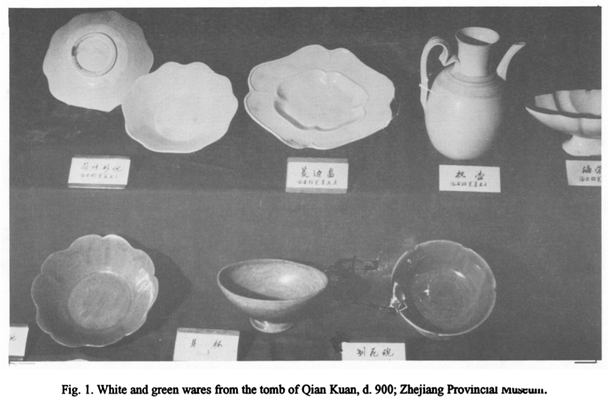
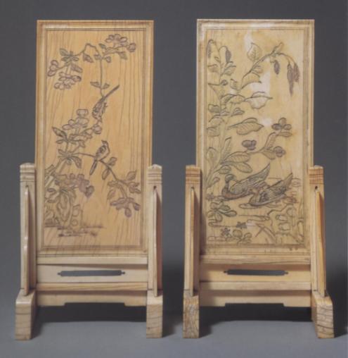

I - Introduction to Confucian Aesthetics
Chinese homeware and decorative arts offer an important site for the study of Confucian thought in China over time and its influence in the domestic space. This examination into household items will show how Confucianism was expressed through craft and the role of interior design as the conveyor of Confucian ideas into family life. From furniture to ceramics, these objects of practical purpose serve as artifacts for scholars seeking to reconstruct and understand historic Chinese lifestyles and society.
Ceramics
An analysis into Chinese ceramics overtime tells us not only popular artistic trends but also how Confucian notions of hierarchy manifested in China’s material culture. Chinese artisans innovated ceramic styles and production through their use of high-fire kilns.1 These allowed for the creation of early forms of pottery like porcelain white wares first seen in the Shang dynasty and later green glazed ceramics that emerged in 1200 BC.2 Below are examples of both white ware and Cizhou-type wares characterized by their green glaze:
Chinese ceramics production utilized an assembly line methodology that gave way to large scale manufacturing. More than 15,000 items were identified in the remains of a sunken ship dated to the 14th century.3
However, by the 14th century, there was a revival of bronze items that would be used in Confucian ritual:4
Right: Incense burners. Ming Dynasty, late 16th-early 17th century. Bronze and bronze with gold splashes.5
Depicted above, are incense burners from the late 16th and early 17th centuries, however, their design is inspired by ritual vessels from the Shang and Zhou dynasties. While slightly varied in their form, these items illustrate the gui shaped vessels for daily use that were typically kept in home altars.6
Homeware also reflects notions of material hierarchy derived from the ordered ideology inspired by Confucianism. While bronze and ceramic containers were valued differently across time, both materials were considered inferior to precious stone. Jade in particular assumed the highest position within rankings of material valuations.7
Decorative Arts and Neo-Confucianism
In addition to pots, furniture items present another destination where Confucian influence on Chinese aesthetics is evident. Confucianism symbolism is exhibited in the two screens below:
An explicit connection to Neo-Confucianism is indicated by script etched on the back of the right hand screen that offers a poem authored by Zhu Xi, who viewed creativity as a key means of self-cultivation.9
Motifs depicted on the screens are taken from the natural world that draw on Neo-Confucian principles of harmony and the environment. Images of ducks and flying birds are printed on the screens. Such motifs reflect ontological, cosmogonic and organicist concepts prominent in Neo-Confucianist thinking. By bringing imagery from the natural world into the home, the screens call back to the Book of Changes that ties humans to nature and the cosmos.10 According to Neo-Confucianist scholars, achieving a balance between Heaven and Earth is required for harmony. Thus, environmental elements were brought into Chinese consciousness and homes through the development of Neo-Confucianism.11
2 iBid. 74.
3 iBid. 76.
4 iBid. 89.
5 Leidy, Denise; Siu, Wai-fong Anita; Watt, James. Chinese Decorative Arts, 1997. 10.
6 iBid.
7 Rawson. "Sets or Singletons? Uses of Chinese Ceramics: 10th-14th Centuries," 1993. 85.
8 Leidy, Siu, Watt. Chinese Decorative Arts, 1997. 43.
9 iBid.
10 Andrijauskas, Antanas. "Peculiarity of the Origins of Chinese Historiography of the Fine Arts." 2020. 134.
11 Ronnie L. Littlejohn, Confucianism: An Introduction. 120-123.